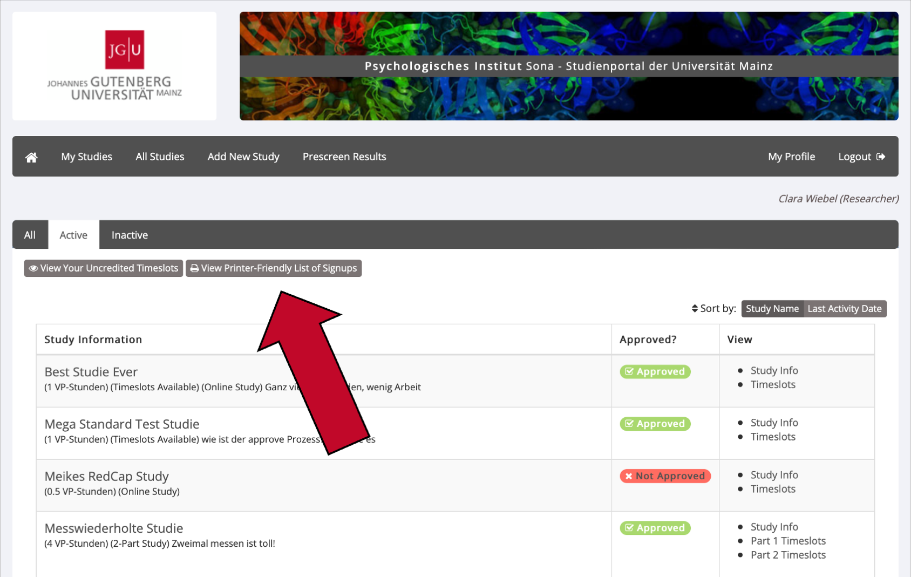
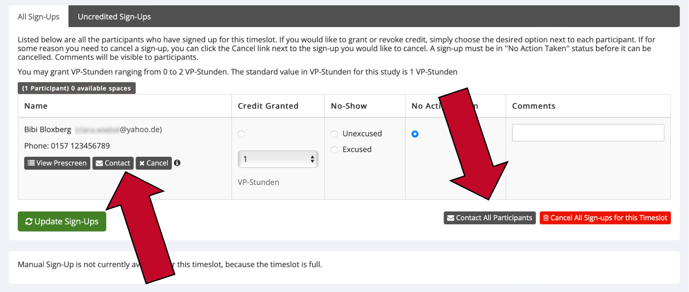
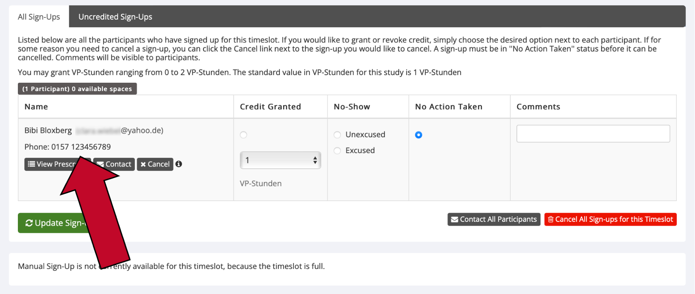
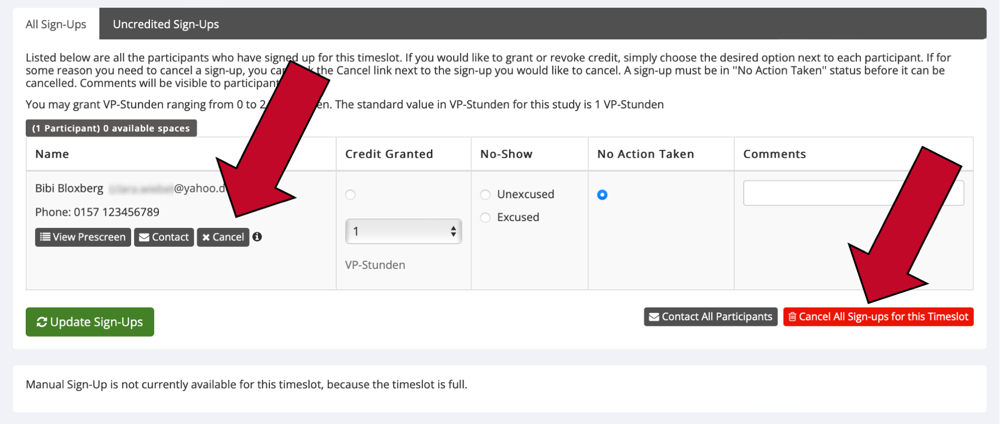
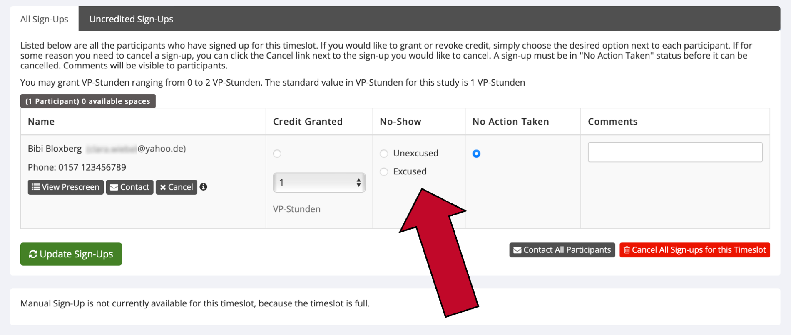

3 Versuchspersonen verwalten
3.1 Ab wann können sich Versuchspersonen für meine Studie anmelden?
Versuchspersonen können Ihre Studie erst in Sona sehen und sich für diese anmelden, wenn Ihre Studie sowohl „active“ als auch „approved“ ist. Sie können Ihre Studie selbst auf „active“ setzen, die Studie genehmigen („approve“) kann allerdings nur die Administration. Wie Sie Ihre Studie auf „active“ setzen und eine Genehmigung beantragen lesen Sie im Abschnitt Studie auf „active“ setzen und genehmigen lassen.
3.2 Versuchspersonen manuell anmelden
Für den Fall, dass Sie persönlich einen Termin mit einer Versuchsperson ausgemacht haben oder Versuchspersonen spontan zu Ihrer Erhebung erscheinen dürfen, können Sie diese Versuchspersonen manuell zur Studie anmelden.
Dafür müssen zwei Voraussetzungen gegeben sein: (1) Die Versuchsperson, die Sie anmelden möchten, hat ein Sona Konto. (2) Es muss bereits einen freien Timeslot geben, zu dem Sie die Versuchsperson anmelden. Wenn Sie also einen offenen Erhebungszeitraum planen, stellen Sie vorher einen oder mehrere Timeslots für Ihre Studie ein mit jeweils so vielen Plätzen, wie Versuchspersonen gleichzeitig an Ihrer Studie teilnehmen können.
Um Versuchspersonen manuell für Ihre Studie anzumelden, gehen Sie wie folgt vor.
- Klicken Sie in der Menüleiste auf „My Studies“ und dann auf den Namen der betreffenden Studie.
- Wählen Sie im Study Menu (ganz oben und ganz unten auf der Seite) den Punkt
View/Admister Time Slots. - Klicken Sie bei dem Timeslot, für den Sie die Versuchsperson anmelden wollen, rechts auf
Modify. - Ganz unten auf der Seite finden Sie den Abschnitt
Manual Sign-Up. Hier können Sie entweder die User ID (Benutzername auf Sona) oder den vollen Namen der Versuchsperson eintragen. - Klicken Sie auf den grünen Knopf
Sign Up, um die Anmeldung abzuschließen und bestätigen Sie die Eingabe erneut mitSign Up.
3.3 Wo sehe ich, wer sich für meine Studie(n) angemeldet hat?
Sie erhalten immer eine System-E-Mail, sobald sich Versuchspersonen für Ihre Studie anmelden. Zudem können Sie am Vortag des Termins mit einer Versuchsperson eine Reminder-E-Mail erhalten. Ob Sie diese Reminder-E-Mail erhalten oder nicht, können Sie ganz unten unter My Profile ändern.
Um eine Liste von Anmeldungen für Ihrer Studie zu erhalten, gehen Sie bitte wie folgt vor.
- Klicken Sie in der Menüleiste auf
My Studies.- Alternative A: Klicken Sie auf
View Printer-Friendly List of Signups, um eine Liste von Versuchspersonen zu erhalten, die an einem bestimmten Tag für irgendeine Ihrer Studien angemeldet sind. - Alternative B: Klicken Sie auf den Titel einer bestimmten Studie und wählen Sie im
Study Menu(entweder oben oder ganz unten auf der Website) den UnterpunktView/Administer Time Slotsaus. Hier können Sie in der Menüleiste wählen, ob Sie- alle Timeslots (
All Timeslots), - aktuelle Timeslots (
recent Timeslots), - anstehende Timeslots (
Upcoming Timeslots) oder - ältere Timeslots (
Older Timeslots) sehen möchten.
- alle Timeslots (
- Alternative A: Klicken Sie auf

3.4 Angemeldete Versuchspersonen kontaktieren
Sie haben zwei Möglichkeiten, um für Ihre Studie angemeldete Versuchspersonen zu kontaktieren:
- Per E-Mail: Dies ist der Standard, um Versuchspersonen zu kontaktieren. Insbesondere wenn es um einen Termin geht, der nicht noch am selben Tag stattfinden soll, kontaktieren Sie die Versuchsperson bitte per E-Mail.
- Ggf. telefonisch: Bitte kontaktieren Sie Versuchspersonen nur in Notfällen telefonisch, beispielsweise wenn diese nicht zu ihrem angemeldeten Termin erscheinen, Sie selbst sich zum Termin verspäten oder den vereinbarten Termin sehr kurzfristig absagen müssen. Bitte beachten Sie, dass Versuchspersonen nicht dazu verpflichtet sind, ihre Handynummer auf Sona anzugeben, sodass Sie manche Versuchspersonen nicht telefonisch erreichen können. Kontaktieren die diese Versuchspersonen bitte per E-Mail.
Kontaktierung per E-Mail
- Klicken Sie in der Menüleiste auf
My Studiesund klicken Sie den Namen der betreffenden Studie an. - Wählen Sie im Study Menu (ganz oben und ganz unten auf der Seite) den Punkt
View/Admister Time Slots. - Klicken Sie beim betreffenden Timeslot rechts auf
Modify.- Klicken Sie unter dem Namen einer Versuchsperson auf
Contact, um diese Person einzeln zu kontaktieren. - Oder: Klicken Sie ganz unten auf den grauen Knopf
Contact All Participants, um alle für diesen Timeslot angemeldeten Versuchspersonen zu kontaktieren.
- Klicken Sie unter dem Namen einer Versuchsperson auf

- Geben Sie im grauen Feld die E-Mail an die Versuchspersonen ein. Sie können den Standard-Text, der bereits eingefügt ist, löschen. Sie haben zudem die Möglichkeit, die E-Mail erst mit einer Zeitverzögerung vom System abschicken lassen. Dies können Sie unter
Emailing Delayeinstellen. - Klicken Sie auf
Preview Messages…, um Ihre E-Mail zu überprüfen. - Klicken Sie auf
Proceed, um die E-Mail abzuschicken.
Telefonische Kontaktierung
- Klicken Sie in der Menüleiste auf
My Studiesund klicken Sie den Namen der betreffenden Studie an. - Wählen Sie im Study Menu (ganz oben und ganz unten auf der Seite) den Punkt
View/Admister Time Slots. - Klicken Sie beim betreffenden Timeslot rechts auf
Modify. - Wenn die Versuchsperson Ihre Handynummer auf Sona angegeben hat, sehen Sie diese direkt unter ihrem Namen. Rufen Sie diese Nummer an, um die Versuchsperson zu kontaktieren. Falls Sie dort keine Handynummer sehen, kontaktieren Sie die Versuchsperson bitte per E-Mail.

3.5 Termine absagen / Versuchspersonen abmelden
Angemeldete Versuchspersonen dürfen nur im Notfall (z.B. bei Erkrankung der Versuchsleitung ohne Vertretungsmöglichkeit) durch die Versuchsleitung wieder abgemeldet werden. Dies betrifft natürlich nicht diejenigen Abmeldungen, die auf Wunsch der Versuchsperson hin erfolgen.
Um einen Termin abzusagen bzw. eine angemeldete Versuchsperson von Ihrer Studie abzumelden, gehen Sie wie folgt vor.
- Klicken Sie in der Menüleiste auf
My Studiesund klicken Sie auf den Namen der betreffenden Studie. - Wählen Sie im Study Menu (ganz oben und ganz unten auf der Seite) den Punkt
View/Administer Time Slots. - Klicken Sie beim betreffenden Timeslot rechts auf
Modify.- Klicken Sie unter dem Namen einer bestimmten Versuchsperson auf
Cancel, um nur den Termin dieser Person abzusagen. - Oder: Klicken Sie unten rechts auf den roten Knopf
Cancel All Sign-Ups for this Timeslot, um allen Versuchspersonen für diesen Timeslot abzusagen.
- Klicken Sie unter dem Namen einer bestimmten Versuchsperson auf

- Im darauffolgenden Fenster sehen Sie eine Zusammenfassung des Timeslots. Wenn Sie einen Timeslot (Termin) absagen, erhalten die dafür angemeldeten Versuchspersonen automatisch eine E-Mail. Falls Sie dieser E-Mail etwas hinzufügen möchten (z.B. den Grund für Ihre Absage), schreiben Sie dies bitte in das Textfeld
Message for participants. - Bestätigen Sie die Absage mit dem roten Knopf
Yes, perform cancellations.
3.6 Was tue ich, wenn angemeldete Versuchspersonen nicht zu ihrem Termin erscheinen?
Bei Laborstudien
Wenn eine angemeldete Versuchsperson nicht zu ihrem Termin erscheint, versuchen Sie zunächst, die Versuchsperson telefonisch zu kontaktieren (sehen Sie hierzu den Abschnitt Angemeldete Versuchspersonen kontaktieren). Es kann sein, dass sich die Versuchsperson lediglich verspätet oder den Raum nicht findet. Falls die Versuchsperson nicht erreichbar ist oder keine Handynummer angegeben hat, senden Sie ihr bitte eine E-Mail.
Erscheint die Versuchsperson schlussendlich nicht zu ihrem Termin, tragen Sie die Person bitte als „No-Show“ ein:
- Klicken Sie in der Menüleiste auf
My Studiesund klicken Sie den Namen der betreffenden Studie an. - Wählen Sie im Study Menu (ganz oben und ganz unten auf der Seite) den Punkt
View/Admister Time Slots. - Klicken Sie beim Timeslot der betreffenden Versuchsperson rechts auf
Modify. - Wählen Sie, je nach Situation, entweder auf
Excused(entschuldigtes Fehlen) oderUnexcused(unentschuldigtes Fehlen).

- Klicken Sie auf
Update Sign-Ups, um Ihre Eingabe zu bestätigen. Die Versuchsperson wird per E-Mail über Ihre Markierung informiert.
Sollte eine Versuchsperson wiederholt nicht zu vereinbarten Terminen erscheinen, behält sich die Administration vor, weitere Schritte einzuleiten.
Bei Online Studien
Wenn Versuchspersonen sich für Ihre Online-Studie anmelden, aber nicht oder nicht vollständig an dieser teilnehmen, vergeben Sie bitte ein „Excused No-Show“. Der Grund hierfür ist, dass nicht nachvollzogen werden kann, aus welchen Gründen die Versuchsperson nicht (vollständig) an der Studie teilgenommen hat. Beispielsweise könnte sie sich beim Lesen der Studieninformationen oder Einverständniserklärung gegen eine Teilnahme an der Studie entschieden haben.